1000G_single_postion_comp
Andy Beck
2021-11-01
Last updated: 2022-07-07
Checks: 7 0
Knit directory: LSCI/
This reproducible R Markdown analysis was created with workflowr (version 1.7.0). The Checks tab describes the reproducibility checks that were applied when the results were created. The Past versions tab lists the development history.
Great! Since the R Markdown file has been committed to the Git repository, you know the exact version of the code that produced these results.
Great job! The global environment was empty. Objects defined in the global environment can affect the analysis in your R Markdown file in unknown ways. For reproduciblity it’s best to always run the code in an empty environment.
The command set.seed(20211101) was run prior to running
the code in the R Markdown file. Setting a seed ensures that any results
that rely on randomness, e.g. subsampling or permutations, are
reproducible.
Great job! Recording the operating system, R version, and package versions is critical for reproducibility.
Nice! There were no cached chunks for this analysis, so you can be confident that you successfully produced the results during this run.
Great job! Using relative paths to the files within your workflowr project makes it easier to run your code on other machines.
Great! You are using Git for version control. Tracking code development and connecting the code version to the results is critical for reproducibility.
The results in this page were generated with repository version 2af810a. See the Past versions tab to see a history of the changes made to the R Markdown and HTML files.
Note that you need to be careful to ensure that all relevant files for
the analysis have been committed to Git prior to generating the results
(you can use wflow_publish or
wflow_git_commit). workflowr only checks the R Markdown
file, but you know if there are other scripts or data files that it
depends on. Below is the status of the Git repository when the results
were generated:
Ignored files:
Ignored: .Rhistory
Ignored: .Rproj.user/
Ignored: analysis/disqus.html
Ignored: code/random/
Untracked files:
Untracked: 1000G_single_position_ALL-tikzDictionary
Untracked: code/two_pos_functions.R
Untracked: output/tikz/
Unstaged changes:
Modified: analysis/1000G_two_positions_comp.Rmd
Deleted: analysis/1000G_two_postions_comp.Rmd
Modified: analysis/BRIDGES_two_positions.Rmd
Note that any generated files, e.g. HTML, png, CSS, etc., are not included in this status report because it is ok for generated content to have uncommitted changes.
These are the previous versions of the repository in which changes were
made to the R Markdown
(analysis/1000G_single_position_comp.Rmd) and HTML
(docs/1000G_single_position_comp.html) files. If you’ve
configured a remote Git repository (see ?wflow_git_remote),
click on the hyperlinks in the table below to view the files as they
were in that past version.
| File | Version | Author | Date | Message |
|---|---|---|---|---|
| Rmd | 2af810a | Andy Beck | 2022-07-07 | wflow_publish("analysis/1000G_single_position_comp.Rmd") |
| html | 739724a | Andy Beck | 2022-07-07 | Build site. |
| Rmd | b7a8824 | Andy Beck | 2022-07-07 | wflow_publish("analysis/1000G_single_position_comp.Rmd") |
| html | 6658eae | Andy Beck | 2022-07-07 | Build site. |
| Rmd | 6ffaea0 | Andy Beck | 2022-07-07 | wflow_publish("analysis/1000G_single_position_comp.Rmd") |
| html | 9f40f57 | Andy Beck | 2022-07-07 | Build site. |
| Rmd | 44f23af | Andy Beck | 2022-07-07 | wflow_publish("analysis/1000G_single_position_comp.Rmd") |
| html | 647144a | Andy Beck | 2022-07-07 | Build site. |
| Rmd | 9eeaf6e | Andy Beck | 2022-07-07 | wflow_publish("analysis/1000G_single_position_comp.Rmd") |
| html | 6bbc04e | Andy Beck | 2022-07-07 | Build site. |
| Rmd | 211ac31 | Andy Beck | 2022-07-07 | wflow_publish("analysis/1000G_single_position_comp.Rmd") |
| html | 67b7072 | Andy Beck | 2022-07-07 | Build site. |
| Rmd | 09ecadc | Andy Beck | 2022-07-06 | wflow_rename("analysis/1000G_single_postion_comp.Rmd", "analysis/1000G_single_position_comp.Rmd") |
| html | 09ecadc | Andy Beck | 2022-07-06 | wflow_rename("analysis/1000G_single_postion_comp.Rmd", "analysis/1000G_single_position_comp.Rmd") |
1000G Single Position Models - Population Comparisons
Introduction
In another document, we evaluated the single position models using singletons aggregated across all five of the 1000 Genomes super-populations. A natural question we can ask is if there is any heterogeneity across the populations. To address this, we perform our analyses again with the singletons, but this time we analyze each super-population separately. Having done this, we assess consistency of the results by checking the correlations of not only the position-level results, but also the contribution to each statistic from the nucleotides at the flanking position under consideration.
Simple Correlation Analysis
AT_CG
ALL
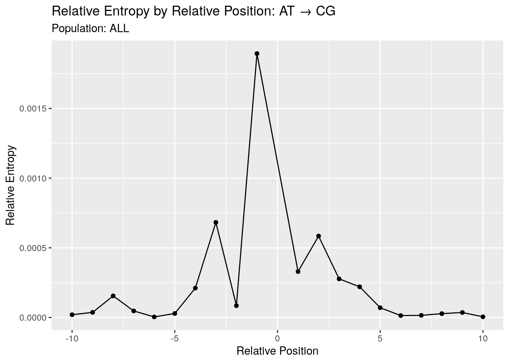
As a reminder, here we plot the single position statistics for the A(T)>C(G) sub-type using singletons aggregated across all 5 super-populations.
AFR
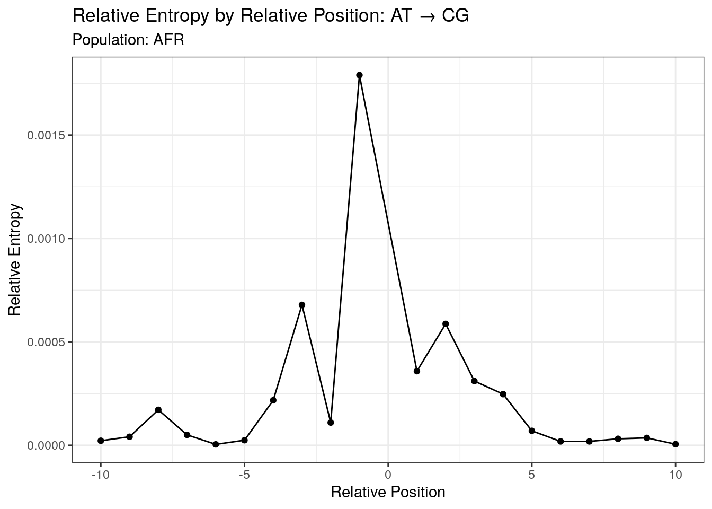
When we look at the AFR super-population, our results across all the positions looks strikingly similar to what we saw above in the ALL analysis. This might be driven by AFR contributing a larger fraction of the singletons than the other 4 super-populations, so let us now take a look at those.

SAS
Across all five super-populations we see the same pattern as we look across positions, suggesting that the results are consistent across the five super-populations. The only difference we really see is a shift in the magnitude of the statistic, which is likely driven by differences in the number of singletons across the super-populations.
To quantify our observation that the statistics are consistent across super-populations, let’s look at the pairwise correlations of statistics across positions for each pair of super-populations:
| term | AFR | AMR | EAS | EUR | SAS |
|---|---|---|---|---|---|
| AFR | NA | 0.9994079 | 0.9947186 | 0.9973397 | 0.9985470 |
| AMR | 0.9994079 | NA | 0.9957566 | 0.9976385 | 0.9984225 |
| EAS | 0.9947186 | 0.9957566 | NA | 0.9886323 | 0.9972469 |
| EUR | 0.9973397 | 0.9976385 | 0.9886323 | NA | 0.9947890 |
| SAS | 0.9985470 | 0.9984225 | 0.9972469 | 0.9947890 | NA |
We see in the above pairwise correlation matrix that the position level statistics are highly correlated between super populations which is what we’d like to see: the patterns of influence at single positions seem to be consistent across 1KGP super-populations. However, this is only a surface-level result; the position-level statistics are the sum of nucleotide-specific contributions, and we’d like to assess whether or not these are also consistent across populations.
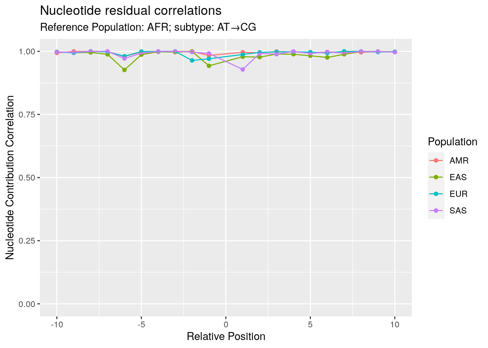
In the above plot we can see that across all positions, the results for the AFR super-population are highly correlated with the other super-populations. The lowest value appears at 1 where the AFR and SAS populations appear to have a lower correlation. But if we look at the nucleotide-level relative entropy residuals at this site we see that the order of the statistics is shared between the two:
df_wide_at_cg %>%
filter(rp == 1) %>%
select(Nuc, AFR, SAS) %>%
pivot_longer(AFR:SAS) %>%
ggplot(aes(x = Nuc, y = value, color = name, group = name)) +
geom_point() +
geom_line() +
ggtitle("AT→CG, +1", "AFR and SAS") +
xlab("Nucleotide")+
ylab("Signed Relative Entropy Residual")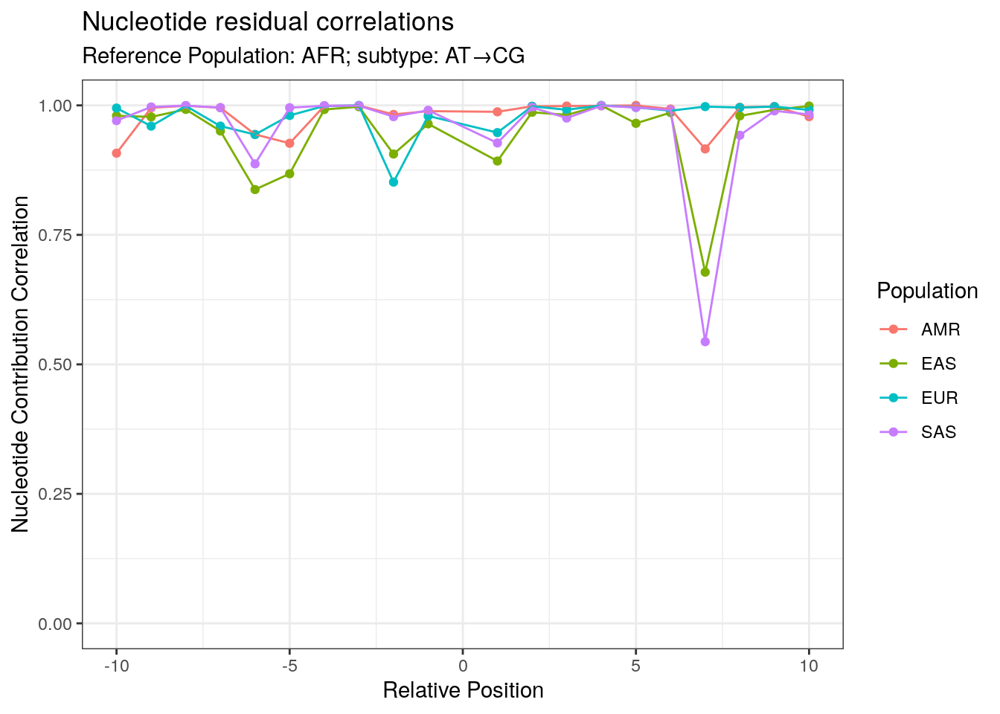
| Version | Author | Date |
|---|---|---|
| 09ecadc | Andy Beck | 2022-07-06 |
Let’s wrap the above analyses into a function and run them on the other subtypes.
corr_analysis <- function(subtype, r_start = 1, stat_col = "s_re"){
df <- load_all_results_all_sp(subtype, r_start = r_start)
df_wide <- df %>%
select(Nuc, rp, pop, !!sym(stat_col)) %>%
pivot_wider(names_from = pop, values_from = !!sym(stat_col))
# position-level statistics
df_pos <- df_wide %>%
group_by(rp) %>%
summarize(across(AFR:SAS, ~sum(abs(.), na.rm = T)))
cor_obj <- df_pos %>%
select(-rp) %>%
correlate(quiet = TRUE)
df_cor <- df_wide %>%
group_by(rp) %>%
summarise(across(AMR:SAS, ~cor(., AFR, use = "complete.obs"), .names = "AFR_{.col}"),
across(EAS:SAS, ~cor(., AMR, use = "complete.obs"), .names = "AMR_{.col}"),
across(EUR:SAS, ~cor(., EAS, use = "complete.obs"), .names = "EAS_{.col}"),
across(SAS, ~cor(., EUR, use = "complete.obs"), .names = "EUR_{.col}"))
if(!str_starts(subtype, "cpg")){
subtype2 <- str_replace(subtype, "_", " → ")
} else {
subtype <- str_sub(subtype, 5)
subtype2 <- paste0("(cpg) ", str_replace(subtype, "_", " → "))
}
p <- df_cor %>%
select(rp, starts_with("AFR")) %>%
pivot_longer(-rp, names_to = "pair", values_to = "cor") %>%
mutate(pair = str_remove(pair, "AFR_")) %>%
ggplot(aes(x = rp, y = cor, group_by = pair, colour = pair)) +
geom_point() +
geom_line() +
ylim(c(0,1)) +
ggtitle("Nucleotide residual correlations",
paste0("Reference Population: AFR; subtype: ", subtype2)) +
xlab("Relative Position") +
ylab("Nucleotide Contribution Correlation") +
labs(colour = "Population")
return(list(p = p, cor_obj = cor_obj))
}AT_GC
subtype <- "AT_GC"
res <- corr_analysis(subtype)
res$p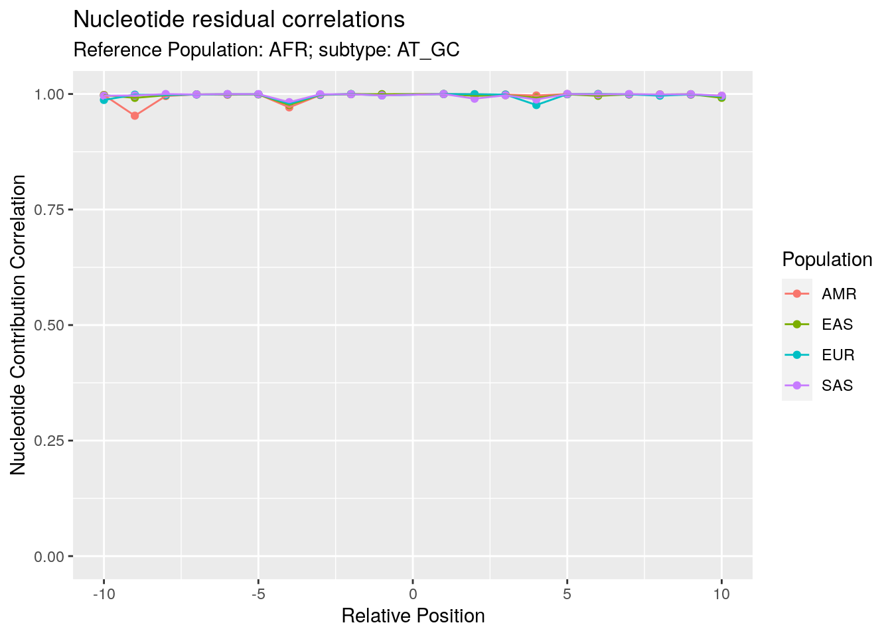
| Version | Author | Date |
|---|---|---|
| 09ecadc | Andy Beck | 2022-07-06 |
res$cor_obj %>%
knitr::kable()| term | AFR | AMR | EAS | EUR | SAS |
|---|---|---|---|---|---|
| AFR | NA | 0.9994391 | 0.9994152 | 0.9981548 | 0.9990215 |
| AMR | 0.9994391 | NA | 0.9996432 | 0.9993965 | 0.9998862 |
| EAS | 0.9994152 | 0.9996432 | NA | 0.9993883 | 0.9996664 |
| EUR | 0.9981548 | 0.9993965 | 0.9993883 | NA | 0.9997377 |
| SAS | 0.9990215 | 0.9998862 | 0.9996664 | 0.9997377 | NA |
AT_TA
subtype <- "AT_TA"
res <- corr_analysis(subtype)
res$p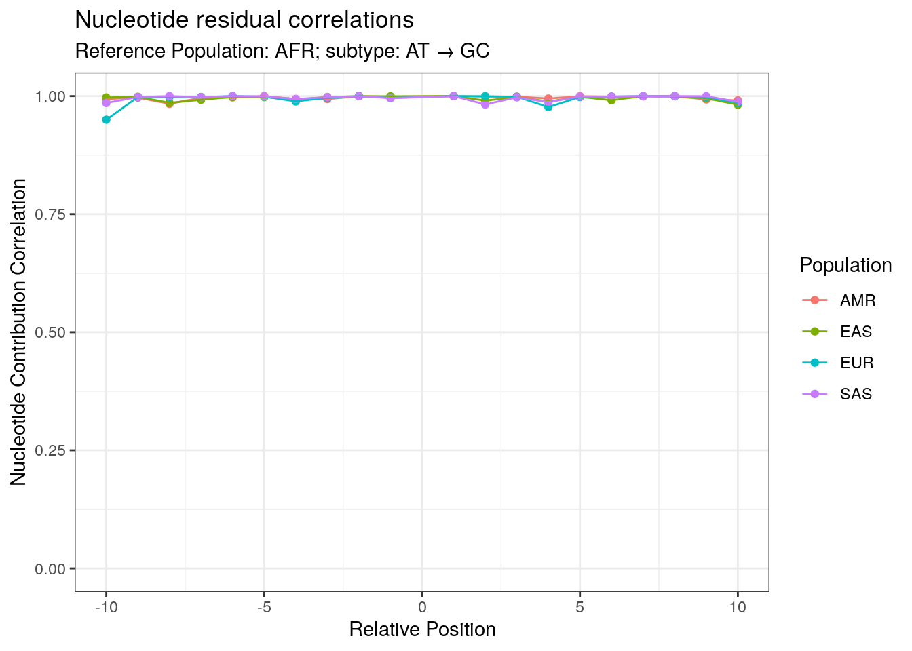
| Version | Author | Date |
|---|---|---|
| 09ecadc | Andy Beck | 2022-07-06 |
res$cor_obj %>%
knitr::kable()| term | AFR | AMR | EAS | EUR | SAS |
|---|---|---|---|---|---|
| AFR | NA | 0.9984298 | 0.9990857 | 0.9984743 | 0.9997840 |
| AMR | 0.9984298 | NA | 0.9982387 | 0.9995419 | 0.9991994 |
| EAS | 0.9990857 | 0.9982387 | NA | 0.9973147 | 0.9991792 |
| EUR | 0.9984743 | 0.9995419 | 0.9973147 | NA | 0.9989587 |
| SAS | 0.9997840 | 0.9991994 | 0.9991792 | 0.9989587 | NA |
GC_AT
subtype <- "GC_AT"
res <- corr_analysis(subtype)
res$p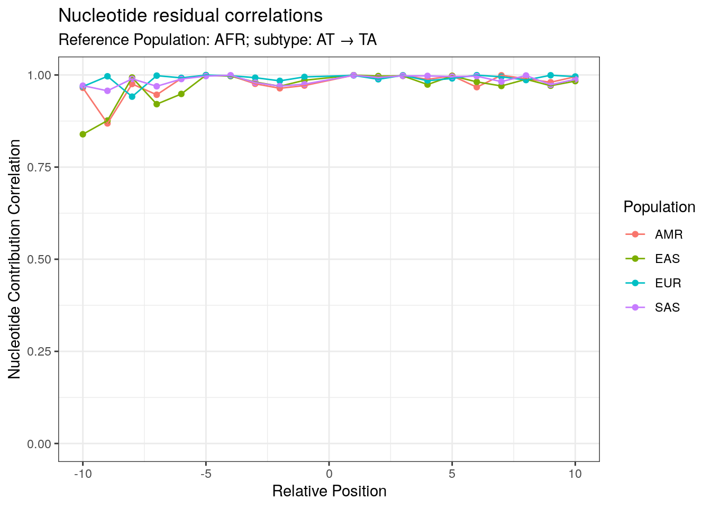
| Version | Author | Date |
|---|---|---|
| 09ecadc | Andy Beck | 2022-07-06 |
res$cor_obj %>%
knitr::kable()| term | AFR | AMR | EAS | EUR | SAS |
|---|---|---|---|---|---|
| AFR | NA | 0.9877009 | 0.9944924 | 0.9810967 | 0.9739385 |
| AMR | 0.9877009 | NA | 0.9935831 | 0.9976128 | 0.9972768 |
| EAS | 0.9944924 | 0.9935831 | NA | 0.9920176 | 0.9854094 |
| EUR | 0.9810967 | 0.9976128 | 0.9920176 | NA | 0.9977753 |
| SAS | 0.9739385 | 0.9972768 | 0.9854094 | 0.9977753 | NA |
cpg_GC_AT
subtype <- "cpg_GC_AT"
res <- corr_analysis(subtype, r_start = 2)
res$p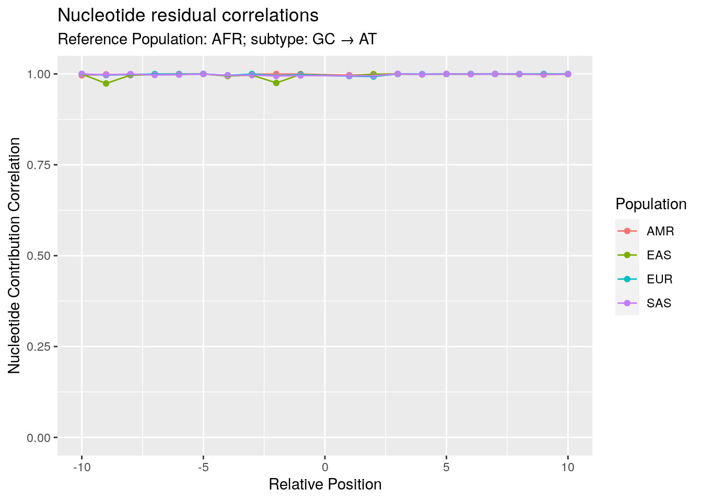
| Version | Author | Date |
|---|---|---|
| 09ecadc | Andy Beck | 2022-07-06 |
res$cor_obj %>%
knitr::kable()| term | AFR | AMR | EAS | EUR | SAS |
|---|---|---|---|---|---|
| AFR | NA | 0.9994183 | 0.9997077 | 0.9995676 | 0.9996066 |
| AMR | 0.9994183 | NA | 0.9995024 | 0.9990294 | 0.9995883 |
| EAS | 0.9997077 | 0.9995024 | NA | 0.9992884 | 0.9997381 |
| EUR | 0.9995676 | 0.9990294 | 0.9992884 | NA | 0.9987337 |
| SAS | 0.9996066 | 0.9995883 | 0.9997381 | 0.9987337 | NA |
GC_CG
subtype <- "GC_CG"
res <- corr_analysis(subtype)
res$p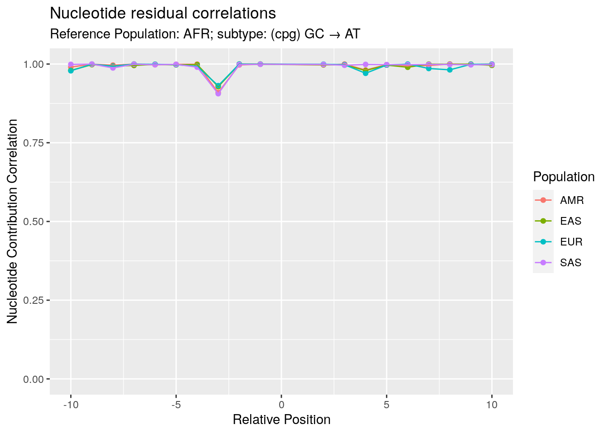
| Version | Author | Date |
|---|---|---|
| 09ecadc | Andy Beck | 2022-07-06 |
res$cor_obj %>%
knitr::kable()| term | AFR | AMR | EAS | EUR | SAS |
|---|---|---|---|---|---|
| AFR | NA | 0.9933433 | 0.9917569 | 0.9909552 | 0.9935676 |
| AMR | 0.9933433 | NA | 0.9974962 | 0.9987798 | 0.9994032 |
| EAS | 0.9917569 | 0.9974962 | NA | 0.9990785 | 0.9984492 |
| EUR | 0.9909552 | 0.9987798 | 0.9990785 | NA | 0.9990636 |
| SAS | 0.9935676 | 0.9994032 | 0.9984492 | 0.9990636 | NA |
cpg_GC_CG
subtype <- "cpg_GC_CG"
res <- corr_analysis(subtype, r_start = 2)
res$p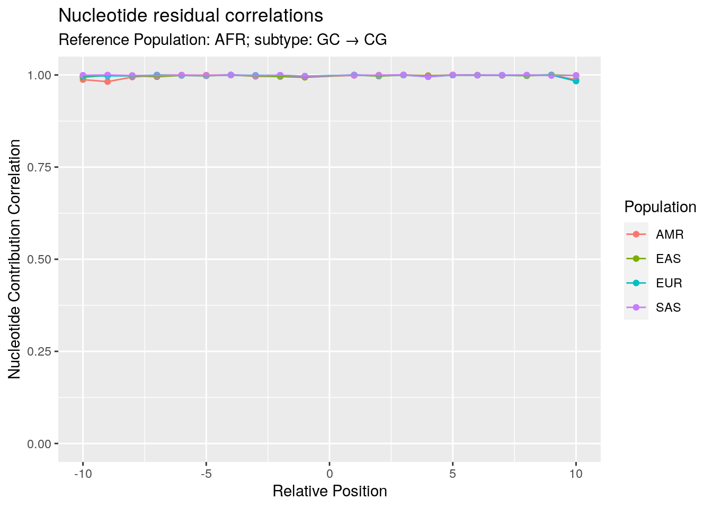
| Version | Author | Date |
|---|---|---|
| 09ecadc | Andy Beck | 2022-07-06 |
res$cor_obj %>%
knitr::kable()| term | AFR | AMR | EAS | EUR | SAS |
|---|---|---|---|---|---|
| AFR | NA | 0.9956394 | 0.9852402 | 0.9904213 | 0.9918122 |
| AMR | 0.9956394 | NA | 0.9918453 | 0.9950198 | 0.9963077 |
| EAS | 0.9852402 | 0.9918453 | NA | 0.9973139 | 0.9957836 |
| EUR | 0.9904213 | 0.9950198 | 0.9973139 | NA | 0.9957160 |
| SAS | 0.9918122 | 0.9963077 | 0.9957836 | 0.9957160 | NA |
GC_TA
subtype <- "GC_TA"
res <- corr_analysis(subtype)
res$p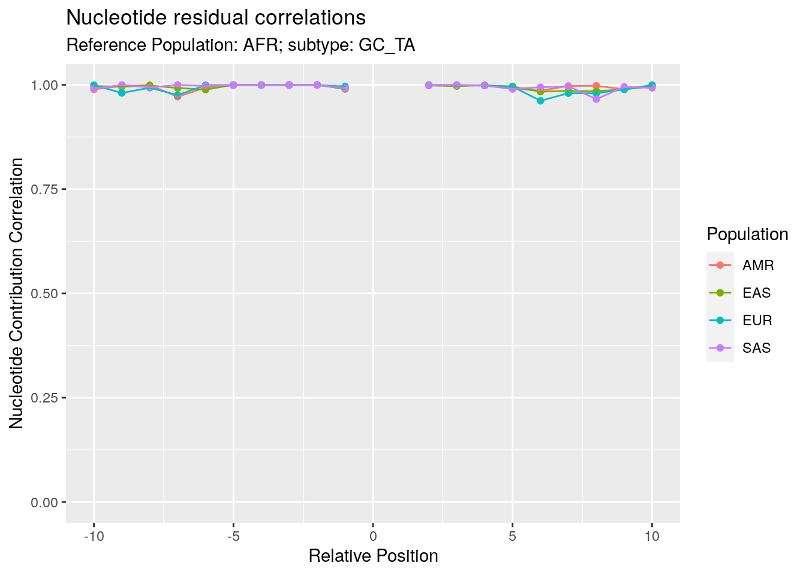
| Version | Author | Date |
|---|---|---|
| 09ecadc | Andy Beck | 2022-07-06 |
res$cor_obj %>%
knitr::kable()| term | AFR | AMR | EAS | EUR | SAS |
|---|---|---|---|---|---|
| AFR | NA | 0.9961824 | 0.9905209 | 0.9994185 | 0.9927585 |
| AMR | 0.9961824 | NA | 0.9984909 | 0.9945472 | 0.9992777 |
| EAS | 0.9905209 | 0.9984909 | NA | 0.9881049 | 0.9995557 |
| EUR | 0.9994185 | 0.9945472 | 0.9881049 | NA | 0.9909599 |
| SAS | 0.9927585 | 0.9992777 | 0.9995557 | 0.9909599 | NA |
cpg_GC_TA
subtype <- "cpg_GC_TA"
res <- corr_analysis(subtype, r_start = 2)
res$pWarning: Removed 1 rows containing missing values (geom_point).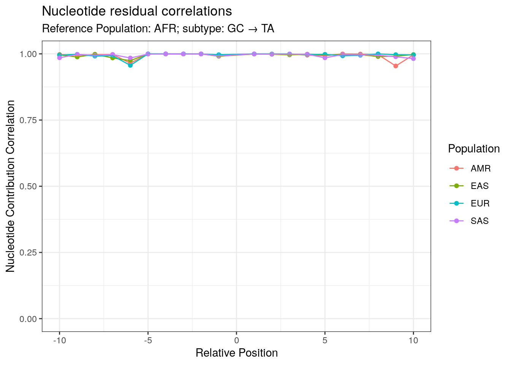
| Version | Author | Date |
|---|---|---|
| 09ecadc | Andy Beck | 2022-07-06 |
res$cor_obj %>%
knitr::kable()| term | AFR | AMR | EAS | EUR | SAS |
|---|---|---|---|---|---|
| AFR | NA | 0.9977068 | 0.9988379 | 0.9971763 | 0.9986401 |
| AMR | 0.9977068 | NA | 0.9964660 | 0.9948515 | 0.9960208 |
| EAS | 0.9988379 | 0.9964660 | NA | 0.9980686 | 0.9993968 |
| EUR | 0.9971763 | 0.9948515 | 0.9980686 | NA | 0.9972853 |
| SAS | 0.9986401 | 0.9960208 | 0.9993968 | 0.9972853 | NA |
Chi Square Approach
Similar to what we did with the single position models, we can also use the chi square goodness of fit test to evaluate, for each sub-type and at each relative position, how similar are the counts between each super-population, and how does this statistic compare to what we observe comparing each super-population to its control sample? We can also do this to compare the BRIDGES data to the 1000G data as well.
Let’s first work this out for a sub type at one position, and then move on from there:
df_AFR <- load_sp_results("AFR", "AT_CG", -1) %>%
select(Nuc, singletons) %>%
mutate(rate = singletons/sum(singletons))
df_AMR <- load_sp_results("AMR", "AT_CG", -1) %>%
select(Nuc, singletons) %>%
full_join({df_AFR %>% select(Nuc, rate)}, by = "Nuc") %>%
mutate(expected = rate * sum(singletons)) %>%
mutate(chi_sq = (singletons - expected)^2 / expected)Compare to BRIDGES
Considering the above results suggested that the super-populations are comparable in terms of the single model results, for comparisons with the BRIDGES data set we’ll use the ALL “population” for comparisons.
sessionInfo()R version 4.2.0 (2022-04-22)
Platform: x86_64-pc-linux-gnu (64-bit)
Running under: Ubuntu 18.04.6 LTS
Matrix products: default
BLAS: /usr/lib/x86_64-linux-gnu/openblas/libblas.so.3
LAPACK: /usr/lib/x86_64-linux-gnu/libopenblasp-r0.2.20.so
locale:
[1] LC_CTYPE=en_US.UTF-8 LC_NUMERIC=C
[3] LC_TIME=en_US.UTF-8 LC_COLLATE=en_US.UTF-8
[5] LC_MONETARY=en_US.UTF-8 LC_MESSAGES=en_US.UTF-8
[7] LC_PAPER=en_US.UTF-8 LC_NAME=C
[9] LC_ADDRESS=C LC_TELEPHONE=C
[11] LC_MEASUREMENT=en_US.UTF-8 LC_IDENTIFICATION=C
attached base packages:
[1] stats graphics grDevices utils datasets methods base
other attached packages:
[1] tikzDevice_0.12.3.1 corrr_0.4.3 forcats_0.5.1
[4] stringr_1.4.0 dplyr_1.0.9 purrr_0.3.4
[7] readr_2.1.2 tidyr_1.2.0 tibble_3.1.7
[10] ggplot2_3.3.6 tidyverse_1.3.1 workflowr_1.7.0
loaded via a namespace (and not attached):
[1] httr_1.4.3 sass_0.4.1 bit64_4.0.5 vroom_1.5.7
[5] jsonlite_1.8.0 modelr_0.1.8 bslib_0.3.1 assertthat_0.2.1
[9] getPass_0.2-2 highr_0.9 cellranger_1.1.0 yaml_2.3.5
[13] pillar_1.7.0 backports_1.4.1 glue_1.6.2 digest_0.6.29
[17] promises_1.2.0.1 rvest_1.0.2 colorspace_2.0-3 htmltools_0.5.2
[21] httpuv_1.6.5 pkgconfig_2.0.3 broom_0.8.0 haven_2.5.0
[25] scales_1.2.0 processx_3.5.3 whisker_0.4 later_1.3.0
[29] tzdb_0.3.0 git2r_0.30.1 generics_0.1.2 farver_2.1.0
[33] ellipsis_0.3.2 withr_2.5.0 cli_3.3.0 magrittr_2.0.3
[37] crayon_1.5.1 readxl_1.4.0 evaluate_0.15 ps_1.7.0
[41] fs_1.5.2 fansi_1.0.3 xml2_1.3.3 tools_4.2.0
[45] hms_1.1.1 lifecycle_1.0.1 munsell_0.5.0 reprex_2.0.1
[49] callr_3.7.0 compiler_4.2.0 jquerylib_0.1.4 rlang_1.0.2
[53] grid_4.2.0 rstudioapi_0.13 filehash_2.4-3 labeling_0.4.2
[57] rmarkdown_2.14 gtable_0.3.0 DBI_1.1.2 R6_2.5.1
[61] lubridate_1.8.0 knitr_1.39 fastmap_1.1.0 bit_4.0.4
[65] utf8_1.2.2 rprojroot_2.0.3 stringi_1.7.6 parallel_4.2.0
[69] Rcpp_1.0.8.3 vctrs_0.4.1 dbplyr_2.1.1 tidyselect_1.1.2
[73] xfun_0.31